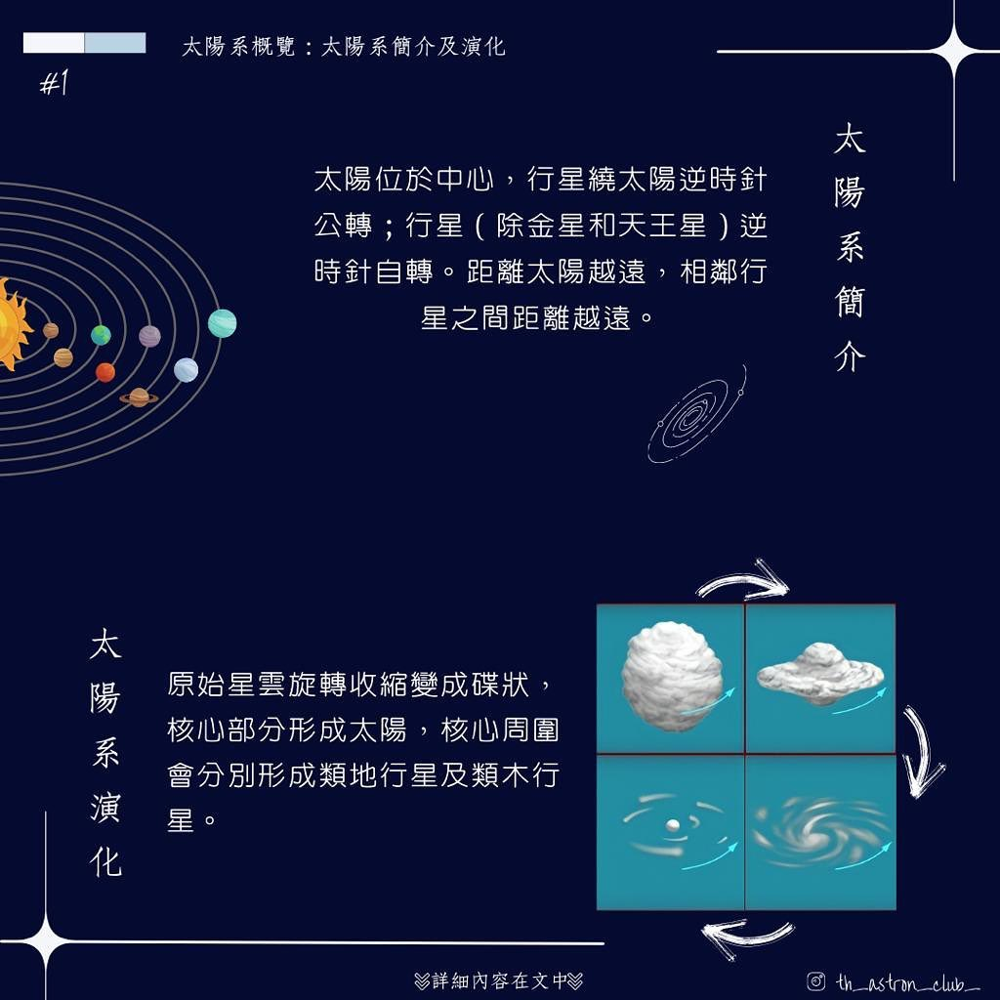
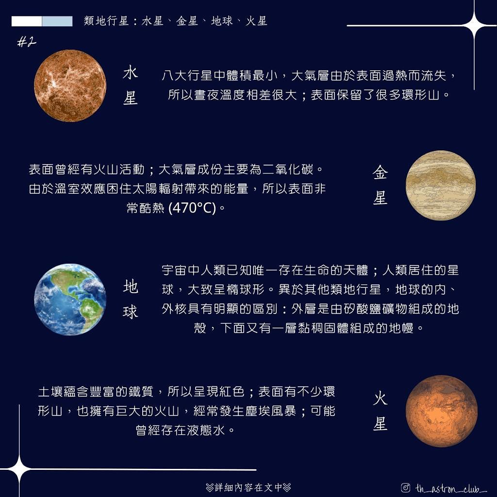
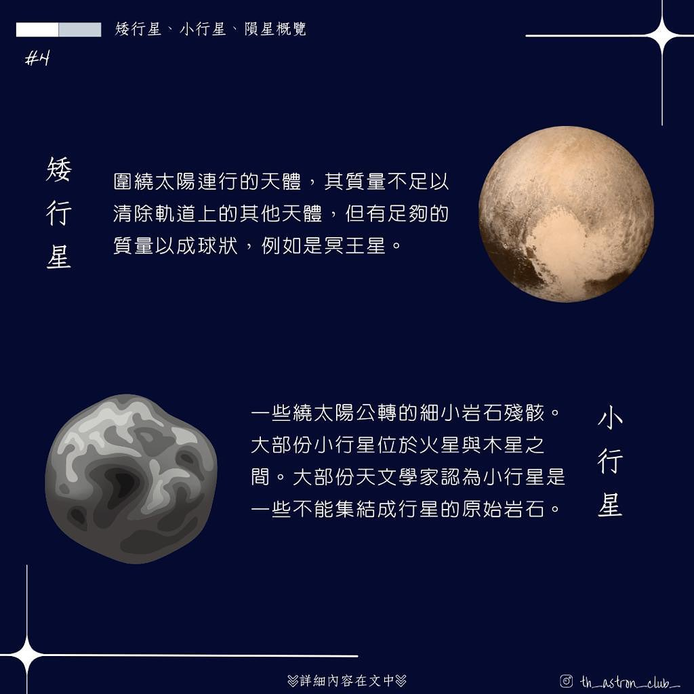
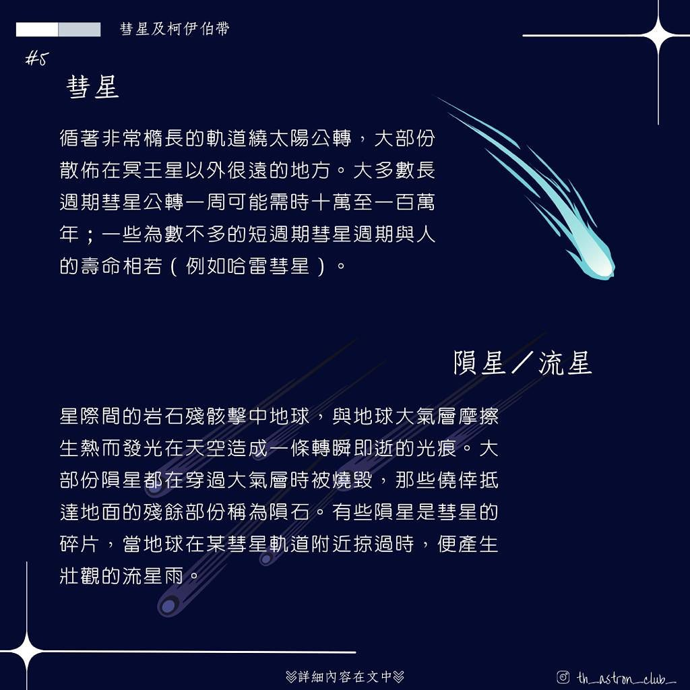

天文冷知識 EP2 太陽系概覽
睇完星期一嘅【天文vs氣象】之後，今日我哋嚟睇吓大家都唔陌生嘅太陽系🌌
太陽系簡介及演化太陽系我哋由細學到大，相信大家都略知一二，但大家又知唔知太陽系本身嘅起源呢？
咁就要提到原始星雲假說啦！
科學家認為太陽系最初係一個識旋轉嘅混沌氣體，旋轉嘅時候產生離心力變成碟狀，核心嘅部份溫度較非常高，形成太陽；周圍形成八大行星，圍繞太陽公轉。 |
 |
類地行星vs 類木行星上文提到，太陽周圍形成咗八大行星，原來八大行星又可以分為兩類：類地行星同埋類木行星喎！
•類地行星：水星、金星、地球、火星
類地行星喺太陽附近形成，佢地體積細、密度高；重力比較弱，所以只可以保持較薄嘅大氣層同俘獲少量衞星圍繞自己公轉。
•類木行星：木星、土星、天王星、海王星
類木行星距離太陽較遠，體積大、密度低；重力較強，所以大氣層會厚啲，有較多衛星同埋有光環；土星、天王星同海星都係有光環嘅行星嚟㗎！ |
 |
矮行星：冥王星
喺2006年，冥王星由最初嘅「行星」被重新定義為矮行星。
佢部份公轉軌道同海王星重疊，有時仲會俾海王星更加接近太陽添～
佢冇光環，但有一粒相對比較大嘅衛星-查倫同四粒小衛星。 |
 |
彗星：哈雷彗星
哈雷彗星係一個好出名嘅短週期彗星，週期同人嘅壽命差唔多(76年），所以一生人只係有機會睇一至兩次。
佢亦都係唯一能用肉眼直接從地球睇到嘅短週期彗星。
科學家計算出哈雷彗星下次通過近日點係喺2061年7月28日，有機會睇到嘅話就好好把握啦！ |
 |